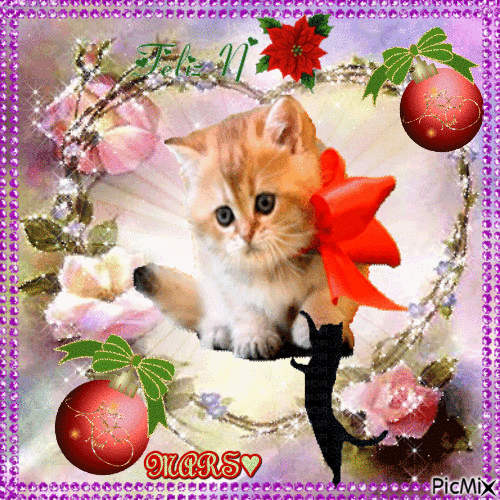
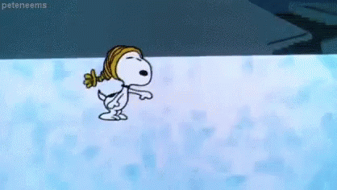
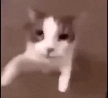

Hello! My name is Mina,
and inspired by the examples in class I'm going to (attempt) write my own poetic about me page!

I was born in Bombay to a tamil family, and moved to the British countryside when I was really little for my dad's job.
My birthday is on October the 24th and I will be turning 21!
I am a bit of a collector of hobbies, and feel super happy (and a bit nervous of course) when I get to try new things!
At the moment I have been giving ice skating, football and skateboarding a go which has been hard but rewarding.
I also love to read and do anything arty since it's so relaxing!
There's so much to learn so I hope I can give lots of things a try.

In the near future I would love to have a somewhat successful and happy career, hopefully in something creative.
Long-term I would be happy to have the privelege to only worry about what to do that day, and live a slow free life.
I really love animals (who doesn't), so to be surrounded by all sorts of creatures would be amazing!!
Currently, I am super lucky to have a dog, Caira who is 11 years old, and Momo the cat what is 3!
They never fail to make me smile and bring so much light everywhere they go!
Here are my cat and dog! 𓇼 ⋆.˚ 𓆉 𓆝 𓆡⋆.˚ 𓇼
Writing about yourself can feel a bit weird- so I used AI for some prompts.
What would be super cool is to learn more about the user of this sight!
